FIRST LIGHT D02 · P2D-R1
最终保存态，固定相机 FOV 为 80 / 80 / 65。每组依次为 Beauty、Gameplay、授权参考；点击可查看原图。
Reload
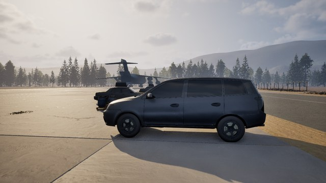
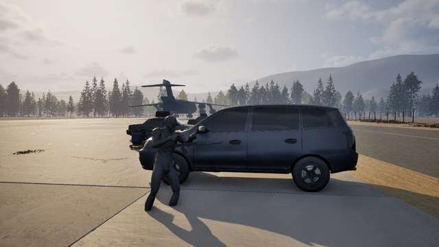

Vault
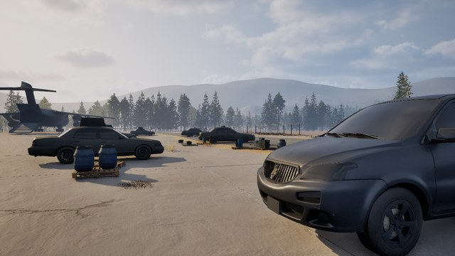
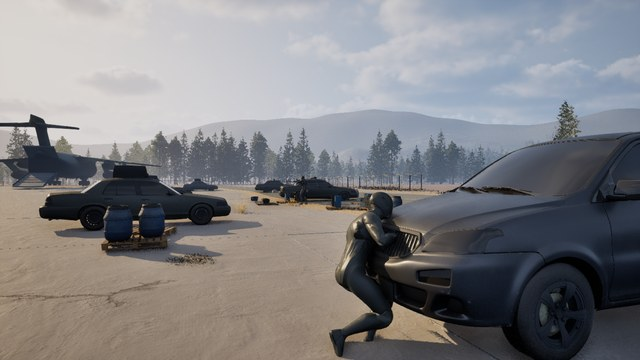

Aim
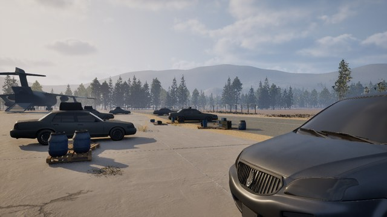
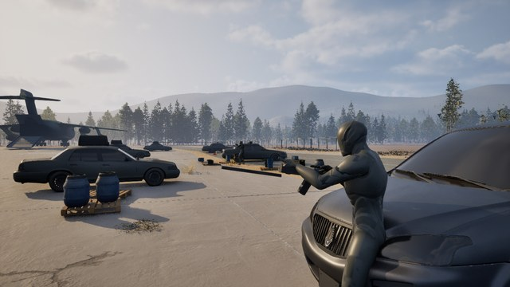

额外水平场景覆盖
同一审查原点，水平朝向 65° / 155° / 245°，相邻方向差 90°。
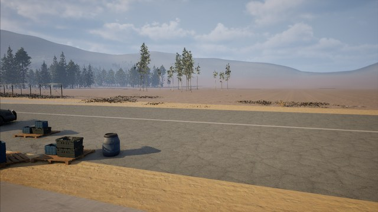
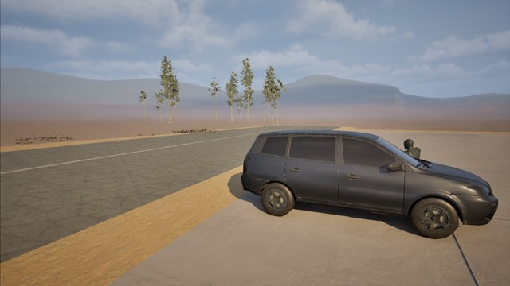
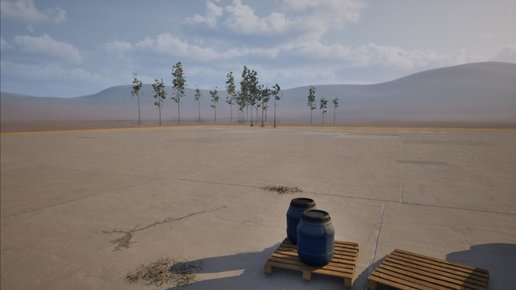
缩略图与差分证据
5px Gaussian Blur + RGB 阈值 20；最大连续变化区域：Reload 1.551%，Vault 3.779%，Aim 4.910%，均落在对应人物/敌人 ROI。
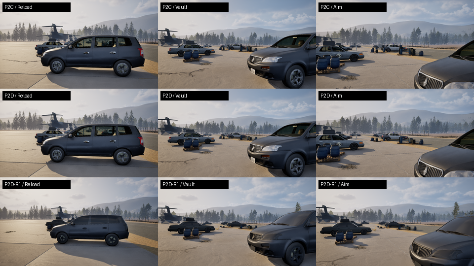
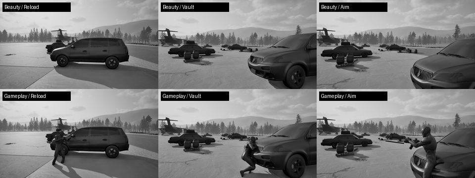
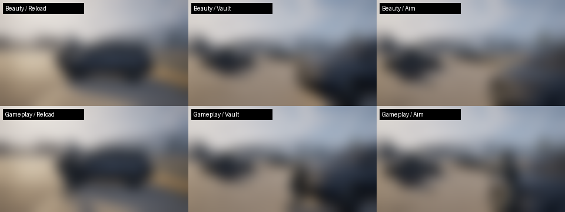